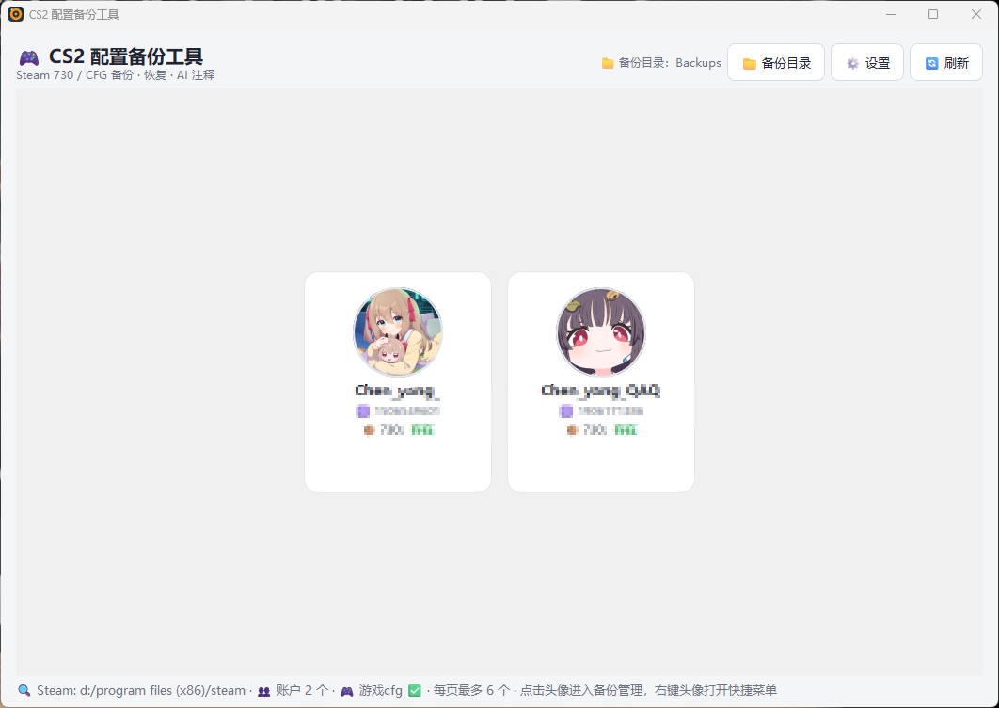
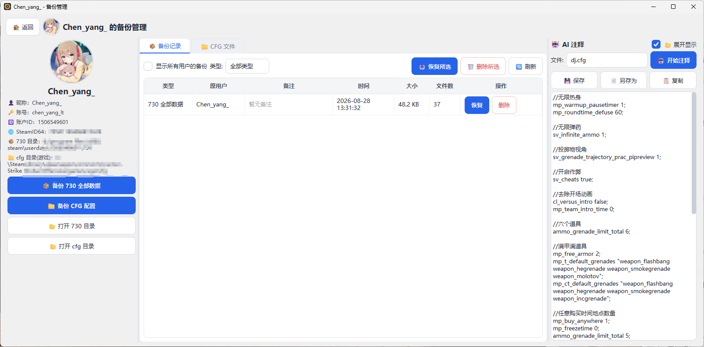
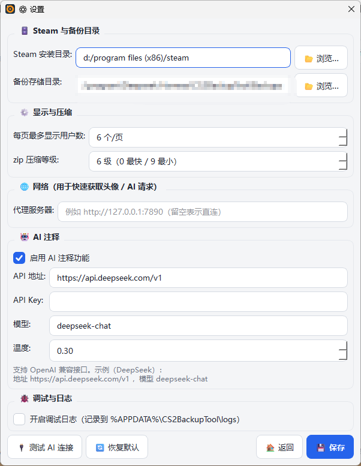

Steam 730 / 游戏 CFG 一键备份 · 跨用户恢复 · AI 逐行注释
🖱 鼠标悬停体验 3D 视角 · 点击图片放大查看



解析 Steam loginusers.vdf，圆形头像 + 昵称 + 账户ID 卡片式展示
「730 全部数据」与「游戏 CFG」分开打包为 zip，压缩等级可调
可把当前配置恢复到任意账户，恢复前自动备份并标明来源
选中 cfg 逐行加中文注释，也可直接提问让 AI 生成 cfg，可保存 / 另存为
换机后仍显示已备份账户，未检测到的账户红色「未发现」标记
1–9 个/页自适应居中，超过自动分页
本地缺失时后台抓取 Steam 头像，支持代理加速